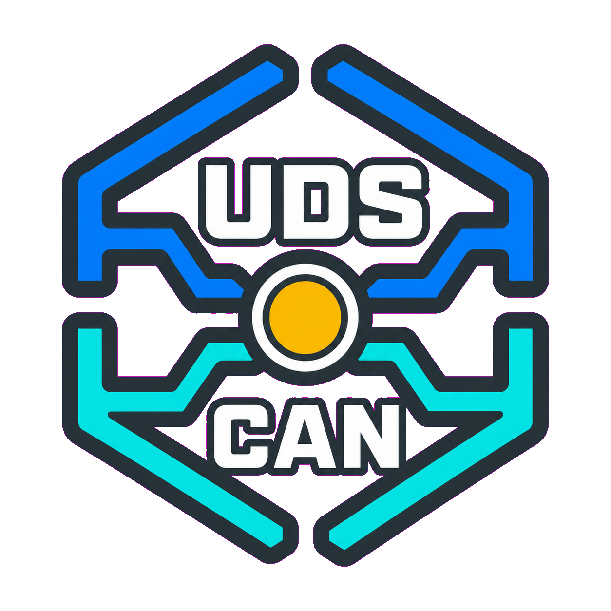
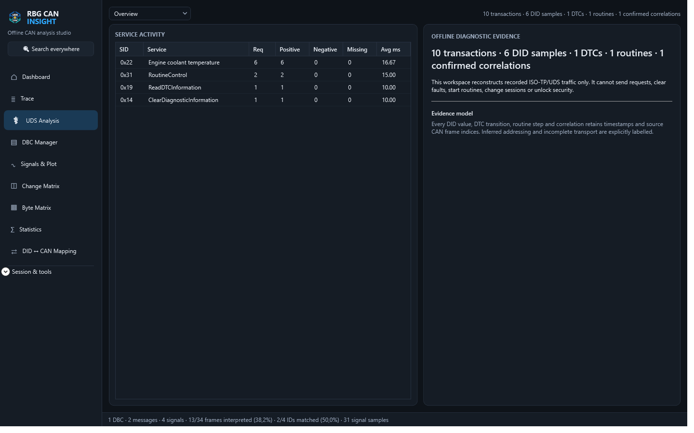
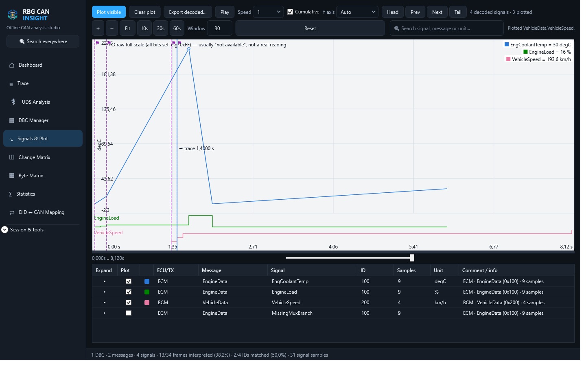

Import and decode
Open ASC, BLF, TRC, CSV, candump and MDF4/MF4 traces, then apply one or more DBC databases.

RBG CAN INSIGHTWindows desktop application
Decode recorded CAN traffic, reconstruct ISO-TP/UDS activity and turn offline traces into engineering evidence.
EUR 19.99 one-time purchase after the trial. Interface in English.
One local workflow
Open ASC, BLF, TRC, CSV, candump and MDF4/MF4 traces, then apply one or more DBC databases.
Reconstruct recorded ISO-TP messages and pair UDS requests with responses, DIDs, DTCs and routines.
Plot physical signals, rank changes and inspect rates, timing variation, bursts and estimated bus load.
Recorded diagnostic evidence
Every result comes from imported frames. RBG CAN Insight cannot transmit requests, change sessions, clear faults or start routines.

Signal investigation
Separate automatic scales prevent a smaller signal from disappearing beside a larger range.

Public synthetic dataset
The demo trace and DBC are artificial. They contain no vehicle, manufacturer, employer or customer data.
Local by design
RBG CAN Insight does not require an application account and does not intentionally upload traces, databases, diagnostic descriptions, reports or projects.
Read the privacy policy